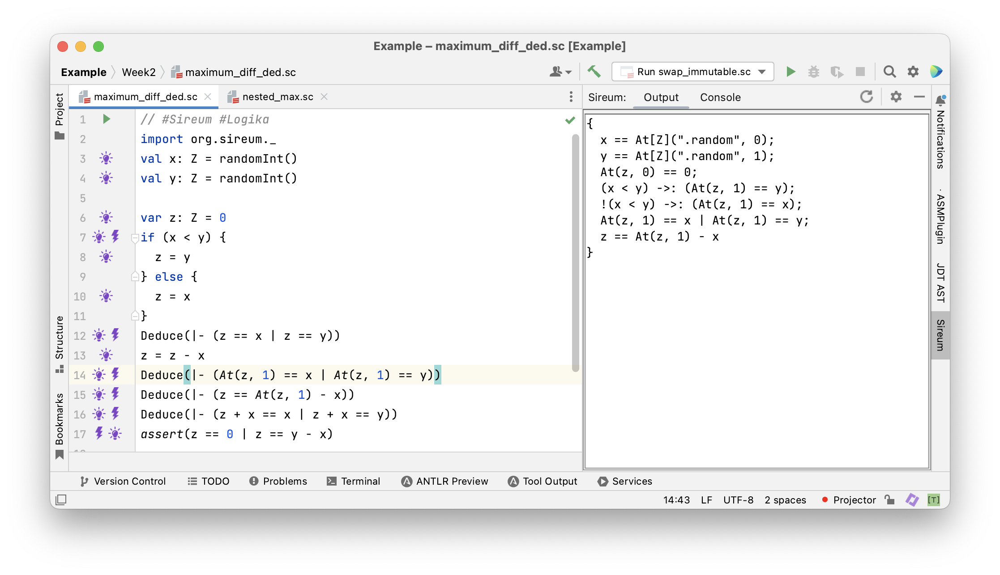
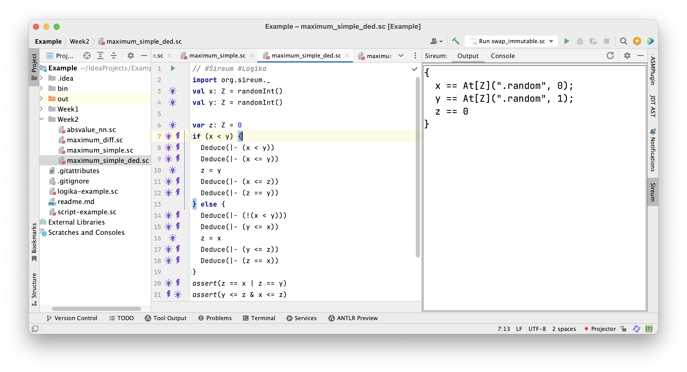
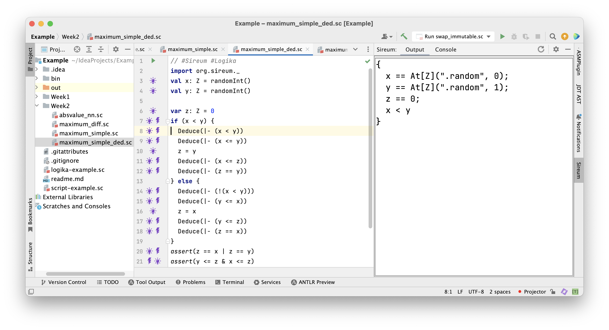
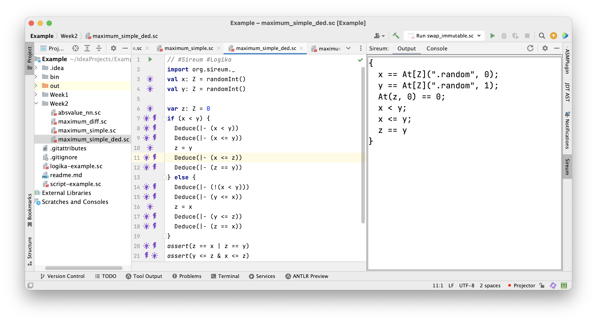
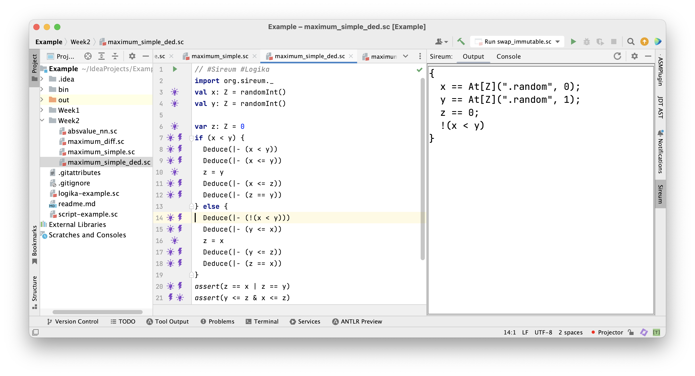
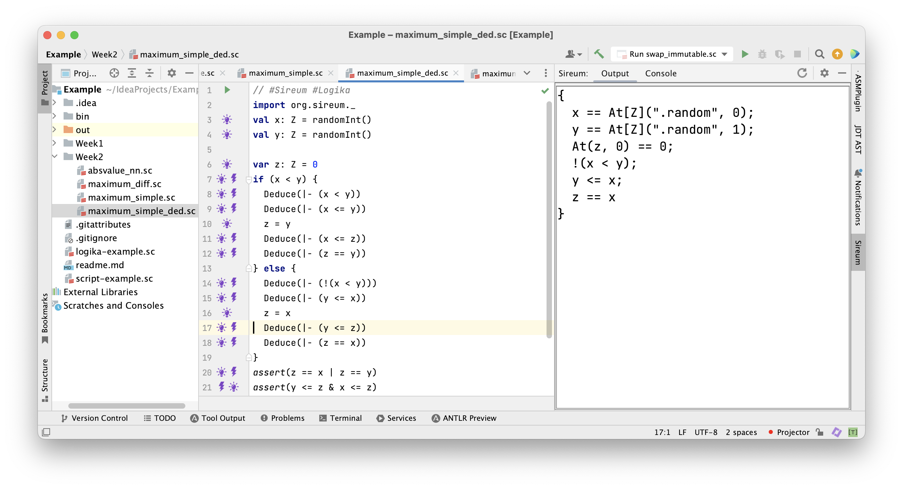
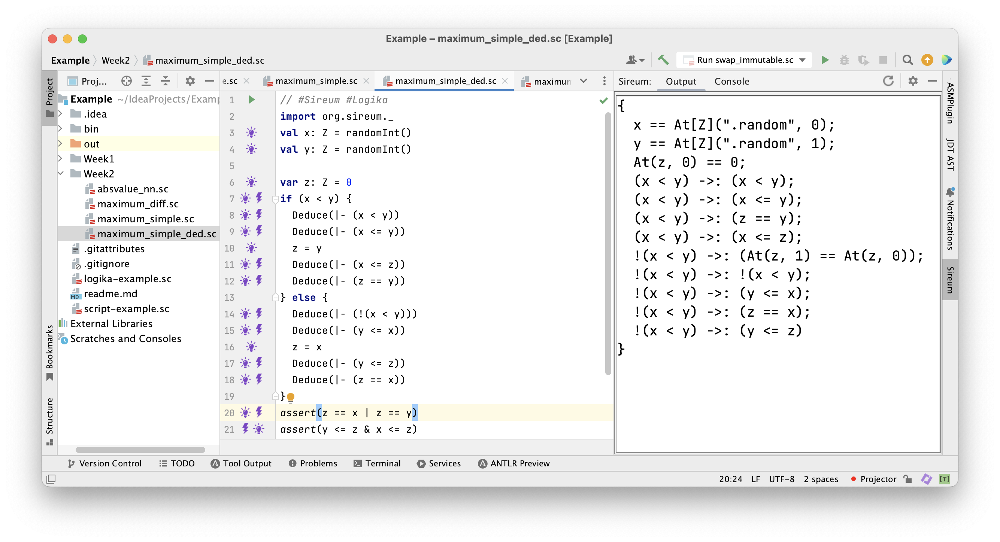
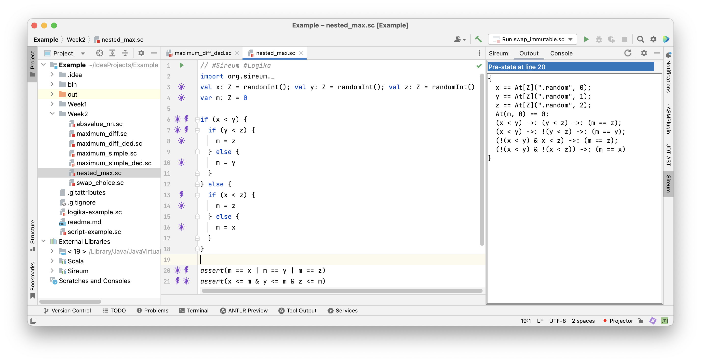
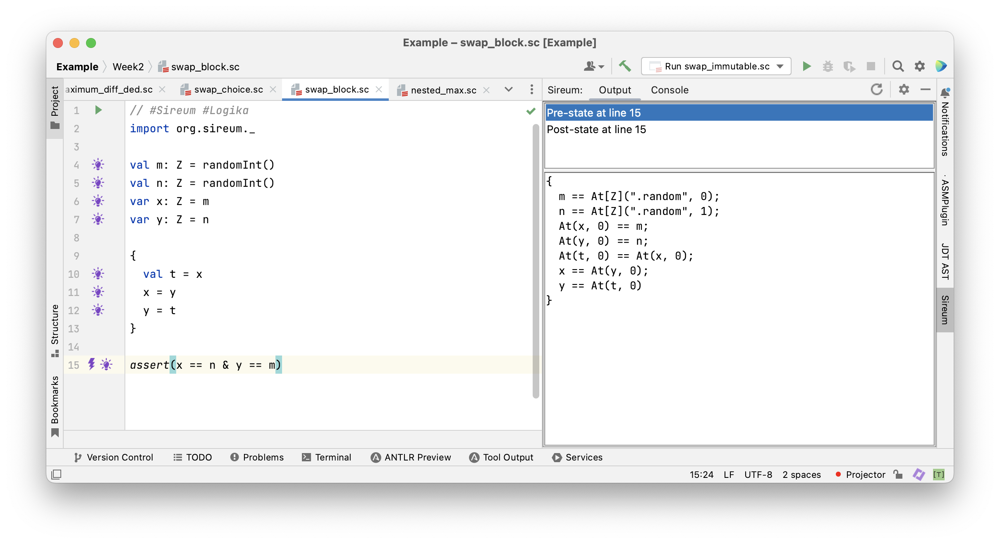

Lecture Summary: Conditionals
Tracing Facts in Conditionals
Assignments and Compositions
In the last lecture we have studied assignments and compositions of assignments. The programs were of the simple shape.
|
|
In this lecture we explore conditionals
|
|
Execution of Conditionals
Of course, we understand the meaning of a conditional
|
|
Usually, we express this in terms of how it is executed:
- If the condition
Bis true, thenSis executed - If the condition
Bis false, thenTis executed
Understanding the execution of a conditional precisely, we can also reason about it. We want to reason about the effect of the conditional without executing it.
Reasoning about Conditionals
We know that S or T is executed depending on the value of B
|
|
This means,
- When first branch is entered,
Bbecomes initially a fact in that branch - When second branch is entered,
!Bbecomes initially a fact in that branch
|
|
Example: Computing the Maximum of two Integers
Example A: Computing the Maximum
As an example of a program with a conditional, we use the program for computing the maximum of two integers below.
We focus on the highlighted fragment on the following slides assuming variables x and y and ignoring the final assertions for now.
|
|
The assignment var z: Z = 0 yields the fact z == 0
|
|
Whichever branch of the conditional we enter, initially z == 0 must still hold because the boolean expression x < y does not modify z
aside.
This is why it’s a bad idea to use conditions with side effects:
It complicates the reasoning about a program and impedes comprehensibility.
Tracing z == 0 into both branches, we get
|
|
Next, we trace the new facts we can deduce from the condition x < y.
In the first branch we can deduce x < y, which implies x <= y.
In the second branch we can deduce !(x < y), which implies y <= x.
Now, we have
|
|
For the further reasoning we only need the last deductions, so we drop the earlier ones.
We already know how do deal with assignments.
|
|
Let’s summarise what we know at this stage.
|
|
|
|
To continue, we lack information about what is true after the execution of the conditional. In order to show that an assertions following a conditional is true we need a method to deduce facts from both branches
Let’s have a look at the first assertion z == x | z == y
|
|
The fact z == y is true in the first branch and the fact z == x in the second.
So, we know one or the other must be true after the conditional, and the assertion is true.
Concerning the second assertion y <= z & x <= z we have the following
|
|
The fact x <= z is true in the first branch and the fact y <= z in the second.
This is not (yet) enough to show that the assertion is true.
|
|
We need to know that both are true (independent of the considered branch)
Remember, that z == y is true in the first branch and z == x in the second
We can deduce y <= z & x <= z in each branch
|
|
Because z == y implies y <= z and z == x implies x <= z.
Thus, y <= z & x <= z is true in both branches, and the assertion is true.
Reason about Conditionals (Completed)
We can complete our method for reasoning about conditionals now:
- When first branch is entered,
Bbecomes initially a fact in that branch - When second branch is entered,
!Bbecomes initially a fact in that branch
|
|
- If we can deduce some fact
Cat the end of the first and a factDat the end of the second branch, then we deduceC | Dafter the conditional.
Reason about Conditionals (Completed Special Case)
We can complete our method for reasoning about conditionals now:
- When first branch is entered,
Bbecomes initially a fact in that branch - When second branch is entered,
!Bbecomes initially a fact in that branch
|
|
- If we can deduce some fact
Cat the end of the first and the second branch, then we deduceCafter the conditional (becauseC | Cis identical toC)
Exercise
Implement and verify a program computing the absolute value of an integer using Slang deductions according to the contract below.
|
|
Example B: Biased Difference
Let’s consider a small variation of the maximum program
|
|
It has an additional assignment at the end. We can reuse the deductions from the maximum problem, only dealing with the added assignment. We already know the deductions we can make at the end of the conditional.
|
|
Of course, the assignment z = z - x changes this fact.
We can deduce At(z, 1) == z + x and replace At(z, 1) in the disjunction.
|
|
This gives the new fact z + x == x | z + x == y.
We already know the deductions we can make at the end of the conditional.
|
|
The assertion now holds by simple algebra.
Example B: Biased Difference Program in Logika
 The deductions and final assertions are verified by Logika.
Programs are Facts
Programs with conditionals correspond to facts of the shape (B -> Sfact) & (!B -> Tfact)
|
|
A little complication will appear later with respect to replacing “old variables” in Sfact and Tfact. Aside. We can also write the conjunction (B -> Sfact) & (!B -> Tfact) as the equivalent disjunction (B & Sfact) | (!B & Tfact). In Logika the first form is used. It permits writing larger formulas in tabular e.g., when dealing with nested conditionals.
Verifying the Maximum Program in Logika
|
|
We have added some Deduce commands to the program to document why it works.
If all Deduce commands are removed, Logika verifies the program fully automatic.
In the future, we will only state facts relevant for the understanding, leaving to Logika some of the work and relying on the reader to fill in the gaps.
The Maximum Program in Logika

Facts known after the first assignment to z.

Facts known when entering the first branch.

Facts known after the assignment to z in the first branch.

Facts known when entering the second branch.

Facts known after the assignment to z in the second branch.

Facts known after the conditional.
Nested Conditionals
The Maximum of Three Integers
The following program computes the maximum of three integers.
|
|
Exercise A: Add the facts that are initially true in each branch. Exercise B: Implement a program that chooses the maximum of four numbers.
The Program as a Fact
Programs with conditionals correspond to facts of the shape (B -> Sfact) & (!B -> Tfact).
|
|
We have the following law relating conjunction and implication: A -> (B -> C) is identical to (A & B) -> C.
Thus, we have two equivalent ways to stack conditions as we move through nested conditionals.
Let’s look directly at the way this is represented in Logika.
The Program in Logika
 Facts following nested conditionals. The conditions are stacked horizontally reaching the inner blocks and vertically enumerating all blocks of the conditional.
The Maximum of Three Integers
Facts corresponding to the program with nested conditionals.
|
|
Each deduction is an implication C-> Bfact where C contains the conditions leading to block B and Bfact is the fact corresponding to that block.
The conjunction of these deductions is the fact corresponding to the program.
Thus, we can easily relate the components of a Slang conditional P to the components of the corresponding fact Pfact
Example: Swapping two Integers
Blocks with Several Assignments
We have considered nested conditionals and seen that there is a close correspondence between programs and the deduced facts at all program locations. We look at a program with larger blocks next. Once we’ve observed these two variations it is not difficult to analyse more complex programs containing conditionals.
Example: Swapping two Integers
The following program chooses to use a local variable if x >= y
|
|
The Example in Logika
 Note that the local variable
Note that the local variable t is only used in the “past form”" At(t, 0).
This variable is not available in the “present form” after the block.

This is a property of local variables in block.
Exercise
Is the following program correct? Why? Add Slang deductions to document your argument
|
|
Symbolic Execution
Facts as Values in Conditionals
Recall the maximum program:
|
|
Symbolic execution of conditionals collects the conditions and their negations in different paths described by the corresponding path conditions. This corresponds closely to the way conditions are stacked when considering conditionals as facts.
Using Facts as Values
|
|
- Executing
var z: Z = 0yields (x: X, y: Y, z: 0), (PC:true) - Executing
if (x < y)yields (x: X, x: X, z = 0), (PC:X < Y) - Executing
z = yyields (x: X, y: Y, z: Y), (PC:X < Y) - Executing
assert(...)yields (x: X, y: Y, z: Y), (PC:X < Y, Y == X | Y == Y) - Executing
elseyields (x: X, x: X, z: 0), (PC:!(X < Y)) - Executing
z = xyields (x: X, y: Y, z: X), (PC:!(X < Y)) - Executing
assert(...)yields (x: X, x: X, z: X), (PC:!(X < Y), X == X | X == Y)
Execution Tree
The two possible outcomes of a condition like x < y give rise to a tree structure of a symbolic execution.
flowchart TB
A[(.., z: 0), (PC: true)]
A --> B[(...,z: 0), (PC: X < Y)]
A -- C[(...,z: 0), (PC:!( X < Y))]
B -- D[(...,z: Y), (PC: X < Y)]
C -- E[(...,z: X), (PC:!( X < Y))]
(Some information has been omitted from the tree to keep it readable)
Slang Examples
Absvalue nn
|
|
Boolor
|
|
Maximum Diff
|
|
Maximum Diff Ded
|
|
Maximum Simple
|
|
Maximum Simple Ded
|
|
Nested Max
|
|
Swap Block
|
|
Swap Choice
|
|
Summary
We have looked at conditionals:
- by tracing facts through programs
- by considering programs as facts
- by symbolic execution
(Just as we did last week for assignments and compositions of assignments) We have reasoned about conditionals observing, in particular, the role of the conditions.